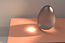
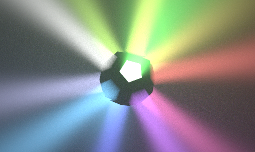
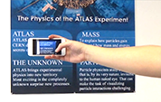

Cheng Zhang
I am a research scientist at Meta (formally known as Facebook) Reality Labs. I received my Ph.D. degree from University of California Irvine in 2022, advised by Prof. Shuang Zhao. During my Ph.D. studies, I was awarded the 2021 Facebook Fellowship. Before that, I obtained my B.E. in Electrical Engineering from BJUT (2011-2015) and my M.S. in Computer Science from Columbia University (2015-2017).
|
|
Antithetic Sampling for Monte Carlo Differentiable Rendering
Cheng Zhang, Zhao Dong, Michael Doggett, Shuang Zhao
|
|
Path-Space Differentiable Rendering of Participating Media
Cheng Zhang*, Zihan Yu*, Shuang Zhao (*equal contribution)
|
|
|  |
Path-Space Differentiable Rendering
Cheng Zhang, Bailey Miller,
Kai Yan, Ioannis Gkioulekas,
Shuang Zhao
|
Multi-Scale Appearance Modeling of Granular Materials with Continuously Varying Grain Properties
Cheng Zhang, Shuang Zhao
|
|
|  |
A Differential Theory of Radiative Transfer
Cheng Zhang, Lifan Wu,
Changxi Zheng,
Ioannis Gkioulekas,
Ravi Ramamoorthi,
Shuang Zhao
|
|  |
FontCode: Embedding Information in Text Documents using Glyph Perturbation
Chang Xiao, Cheng Zhang, Changxi Zheng
|